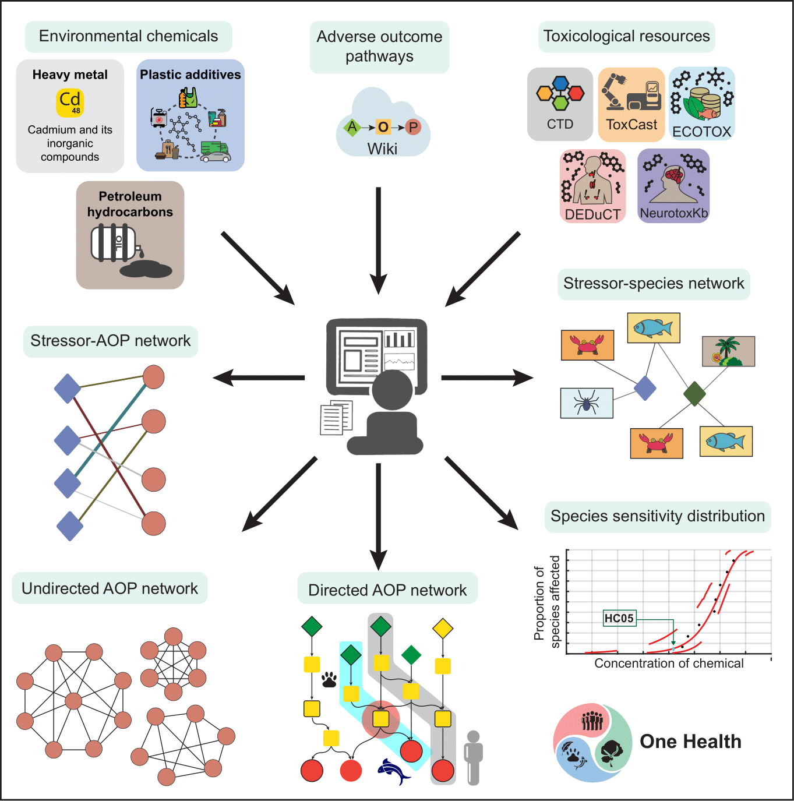

Linking Exposome and One Health by Leveraging Computational Data Science
Compilation, Curation, and Exploration of Natural Product Spaces
Geometry and Topology based Methods for Network & Data Science
Boolean Modelling of Gene Regulatory Networks
Systems Modelling of Metabolism and Protein Secretion Systems
A major focus of our research has centered on the intersection of environmental chemicals and human health since 2017, particularly within the framework of the exposome.
This extensive research has led to the development of several manually curated knowledgebases:
These resources are vital for both fundamental research and regulatory authorities and enhance chemical risk assessment.
These resources, developed by our group, are vital for both fundamental research and regulatory authorities. They enhance chemical risk assessment by providing comprehensive data on environmental chemicals commonly encountered in daily life. This information is essential for formulating strategies to mitigate exposure risks and improve public health initiatives. The DEDuCT database has been particularly influential, receiving recognition from regulatory bodies such as French Agency for Food, Environmental and Occupational Health & Safety (ANSES). ANSES utilized DEDuCT to prioritize substances in their Second National Endocrine Disruptor Strategy (SNPE2). After evaluating 27 existing initiatives on EDCs worldwide, ANSES selected DEDuCT as their primary resource for compiling their list of endocrine disruptors for SNPE2.
To further illustrate the utility of this research for chemical risk assessment, our team has conducted comparative studies using various chemical inventories, guidelines, and regulations to analyze the regulatory status and sources of diverse groups of environmental chemicals. These analyses reveal that many chemicals of concern are part of everyday exposures, with a significant number produced in high volumes.
There is a growing recognition of the necessity to leverage network science and systems biology approaches in characterizing the chemical exposome. Our team has extensively applied these methodologies to the compiled toxicological data for various groups of environmental chemicals. Specifically, our group has constructed bipartite networks that connect environmental chemicals with their target genes, as well as tripartite networks that include environmental chemicals, their target genes, and associated diseases. These networks reveal disrupted pathways and potential disease comorbidities related to chemical exposure. Furthermore, our team has created similarity networks based on structural similarities among environmental chemicals or similarities in their target genes, enhancing our understanding of the structural and functional relationships among these compounds. Notably, they have integrated heterogeneous toxicogenomic information to construct adverse outcome pathway (AOP) networks for endocrine disruption, cadmium exposure, 1,287 plastic additives, and 320 petroleum hydrocarbons. Additionally, they have utilized acute and chronic toxicity data from the ECOTOX database to develop stressor-species networks for several petroleum hydrocarbons. Notably, our work on heavy metals, plastic additives and petroleum hydrocarbons from a One Health perspective has been carried out in close collaboration with the National Centre for Coastal Research (NCCR), Ministry of Earth Sciences, Government of India, Chennai.
Moreover, our group has conducted a computational investigation into the structure-activity landscape of environmental chemicals that bind to two endocrine receptors. This research uncovered the existence of activity cliffs, which are regions where structurally similar chemicals demonstrate significant differences in their biological activity. Our group categorized these activity cliffs into various structural categories. Furthermore, the analysis of the mechanism of action (MOA) annotations for chemicals binding to the TSH receptor (TSHR) identified MOA cliffs, indicating that structurally similar chemicals can exhibit divergent mechanisms of action. In summary, our research exemplifies how leveraging computational data science can bridge the gap between environmental exposures and health outcomes, ultimately contributing to better public health policies and practices.
India is home to a vast diversity of medicinal plants that have been integral to traditional Indian medicine and local health practices for centuries. Many contemporary drugs approved by the US FDA are derived from secondary metabolites found in plants and fungi. To facilitate drug discovery rooted in traditional Indian knowledge, our group has spearheaded an initiative to compile, curate, organize, and digitize the extensive information related to traditional Indian medicine, particularly focusing on the phytochemicals of Indian medicinal plants.
This monumental effort has resulted in the creation of the IMPPAT (Indian Medicinal Plants, Phytochemistry And Therapeutics) database, which is freely accessible for academic research at https://cb.imsc.res.in/imppat. The initial version (1.0) of IMPPAT was published by our team in 2018, compiling data on 1,742 medicinal plants, 9,596 phytochemicals, and 1,124 therapeutic uses. Following four years of dedicated work, the current version (2.0) has expanded to include 4,010 Indian medicinal plants, 17,967 phytochemicals, and 1,095 therapeutic uses. This database elucidates three primary associations: between plants and their phytochemicals, and their therapeutic applications.
IMPPAT 2.0 has meticulously curated and digitized information from over 140 books, encompassing more than 80,000 pages. The FAIR-compliant database provides detailed associations at the plant part level and features a non-redundant stereo-aware library of 17,967 phytochemicals. As such, IMPPAT stands as the most comprehensive resource available on the phytochemical landscape of Indian medicinal plants.
In addition to plant-derived resources, fungal secondary metabolites present another promising avenue for drug discovery. Recognizing a lack of accessible data in this area, our group developed the MeFSAT database, which aggregates information on 184 medicinal fungi, 1,830 secondary metabolites, and 149 therapeutic uses. It is freely accessible for academic research at https://cb.imsc.res.in/mefsat. This unique resource offers valuable insights into the relationships among medicinal fungi, their metabolites, and their therapeutic applications.
Our team has also conducted extensive computational analyses of both the phytochemical space of Indian medicinal plants and the secondary metabolite space of medicinal fungi. Their findings reveal several significant insights. Both natural product spaces contain a substantial variety of drug-like molecules that bear no resemblance to existing FDA-approved drugs. There is considerable scaffold diversity within these spaces; most scaffolds in the drug-like subspace are absent from current FDA-approved drugs. Chemical similarity networks indicate high structural diversity across both natural product spaces. Despite being structurally distinct from FDA-approved drugs, the drug-like metabolites in these spaces share similar molecular properties with them. These findings underscore the substantial potential of the IMPPAT and MeFSAT databases for new drug development by leveraging traditional knowledge. See publication for more details.
Since the release of these natural product resources, there has been a surge of interest from academia and industry eager to utilize this compiled knowledge for drug discovery and wellness-related research. Our group has also undertaken virtual screening studies using molecular docking and molecular dynamics simulations to identify potential phytochemicals within the IMPPAT database that could inhibit key proteins associated with SARS-CoV-2 infection. See publications 1, 2 for more for more details.
In 2025, IMSc signed a letter of agreement with the Advanced Centre for Treatment, Research and Education in Cancer (ACTREC), Tata Memorial Centre, to establish an intra-DAE collaboration with the goal of continued development of the IMPPAT database, and use of Artificial Intelligence (AI) for traditional knowledge inspired drug discovery and integrative medicine.
Our group has developed a database for essential oils of Indian medicinal plants, sCentInDB (DataBase of Essential oil Chemical profiles of Medicinal plants of India), which is freely accessible for academic research at https://cb.imsc.res.in/scentindb. The database covers 554 plants, encompassing 2,170 essential oil profiles and approximately 3,400 chemicals documented at the plant-part level. It also includes information on the therapeutic uses, odor, and color of the oils. Given the extensive use of essential oils in cosmetics, perfumery, food flavoring, and pharmaceuticals, we believe this resource will have broad applications. Moreover, the data can aid in understanding the characteristics of these chemicals and in developing transgenic plants with enhanced oil yield and quality.
Another major focus of our research has been the development of geometry-inspired measures, particularly discrete Ricci curvatures, for the edge-based characterization, alongside topology-based measures such as persistent homology for higher-dimensional analysis of real-world complex networks.
In 2016, along with our collaborators, we were the first to introduce a discretization of the classical Ricci curvature proposed by Robin Forman to the domain of real-world complex networks. Subsequent research by our group and collaborators has established the Forman-Ricci curvature as a valuable tool in network science for several reasons:
Our group, along with our collaborators, has effectively applied Forman-Ricci curvature to analyze various types of networks, including chemical, biological, and financial networks. Notably, they demonstrated that discrete Ricci curvatures are adept at capturing market dynamics during significant financial events by monitoring changes in curvature over time. Furthermore, these curvatures have been shown to reflect changes related to autism and healthy aging in brain functional connectivity networks derived from resting-state fMRI data. In addition to our work on edge-based curvature measures, we introduce a node-based curvature measure: Bakry-Émery-Ricci curvature for the first time to a variety of models and real-world complex networks. This discretization of classical Ricci curvature, inspired by Bochner's identity and was originally proposed by Dominique Bakry and Michel Émery. See publication on this work for additional details. This research initiative received support through the award of Max Planck Partner Group in Mathematical Biology to Areejit Samal.
Topological Data Analysis (TDA) uses tools from combinatorial and algebraic topology to uncover higher-order patterns often missed by classical methods. While traditional graphs struggle to capture complex interactions in real-world networks, hypergraphs and simplicial complexes can represent them effectively. Persistent homology, a core TDA method, extracts topological features from any simplicial complex. Earlier studies focused on weighted, undirected networks, using edge weights for filtration, an approach unsuitable for unweighted networks. Since many real-world networks lack weights, we propose two new methods, based on discrete Morse theory and Forman-Ricci curvature, to analyze unweighted, undirected networks via persistent homology. See publication on this work for additional details. Our group developed a new method, node persistence, that extends persistent homology analysis from a global to a local scale. While traditional persistent homology primarily captures global topological features of complex networks, node persistence enables the extraction of localized structural information, offering a finer resolution of the network's organization. This advancement allows us to simultaneously study both overarching global properties and local variations, thereby providing a more comprehensive characterization of complex systems. Importantly, when applied to brain functional connectivity networks derived from resting-state fMRI data, node persistence was able to identify specific brain regions associated with changes related to autism and healthy aging. See publication on this work for additional details.
Boolean networks (BNs) serve as a framework for modeling gene regulatory networks (GRNs) through nodes, directed edges, and Boolean functions (BFs). Conceived by Stuart Kauffman in 1969, BNs initially modeled GRNs as random due to limited experimental data. However, advancements in omics technologies have enabled the reconstruction of real Boolean GRNs across various cellular processes and species. It is crucial to determine whether the regulatory logic in these models is random or exhibits distinct features.
Our group has systematically explored the nature of real regulatory logic rules by compiling a dataset of 2,687 logic rules from 88 reconstructed discrete models. We examined the prevalence of various biologically meaningful BFs, particularly focusing on read-once functions (RoFs) and nested canalyzing functions (NCFs), which were found to be especially common. Our group analytically demonstrated that RoFs and NCFs exhibit minimal complexity for a given number of inputs (k) and bias (P), measured by Boolean complexity and average sensitivity, respectively. See publication on this work for additional details.
The extensive biological data generated over the past three decades have fueled both manual and automated reconstruction of Boolean GRNs. Despite fixing the network structure, numerous combinations of BFs can yield the same biological fixed points or cellular phenotypes, making it challenging to identify which models are biologically relevant. We utilized the stability of cell states from a developmental landscape to create a model selection framework that distinguishes among equally plausible models based on their recovered cell states and logic rules. Thereafter, we applied our model selection framework on the latest root development Boolean GRN of Arabidopsis thaliana and provided several improved models over the original one. See publication on this work for additional details.
The dynamics of BN models are captured by state transition graphs (STGs), and two BNs with identical structures can display significantly different STGs depending on the BFs used. We have analyzed how different classes of BFs affect STG characteristics while maintaining consistent network structures and biological attractors. In this research, we computed metrics such as the dynamics' rate of contraction ('bushiness') and convergence, drawing inspiration from earlier work cellular automata. Our findings revealed that biologically relevant BFs lead to higher bushiness and convergence compared to random BFs. See publication on this work for additional details.
In summary, our group has clarified the design principles underlying regulatory logic in GRNs and applied these principles to develop methods for realistic reconstruction of Boolean models in biological systems.
Our group has also made significant contributions to the computational modelling of protein secretion systems in microbes, focusing particularly on fungi and bacteria. We have developed an innovative computational pipeline designed to predict secreted and cell membrane proteins in sequenced fungal genomes. This novel tool surpasses existing methodologies, such as FunSecKB and FSD, in accuracy and reliability.
The pipeline was applied to the opportunistic pathogen Aspergillus fumigatus, known for causing aspergillosis. The analysis revealed that over 70% of its secreted proteins exhibit no similarity to human proteins, suggesting these proteins could serve as potential drug targets. Furthermore, the study emphasized the antigenic properties of these proteins, with several showing structural similarities to established drug targets.
Our group has also created T9GPred, a computational tool aimed at predicting the Type 9 secretion system (T9SS) in bacteria, especially within the Bacteroidetes phylum. The T9SS is essential for bacterial motility and pathogenicity. T9GPred was rigorously validated against experimental data and successfully identified T9SS presence along with associated secreted proteins across 693 Bacteroidetes strains.
The development process included meticulous manual curation of experimental evidence and the identification of unique C-terminal domain signals critical for accurate T9SS prediction. These advancements significantly enhance our understanding of microbial protein secretion systems and their implications for pathogenesis and drug discovery. By identifying novel protein targets and elucidating their roles in disease mechanisms, this research paves the way for future therapeutic developments aimed at combating microbial infections.